Friday
1st and 6th arrondissements — Tuileries, Vendôme, Palais-Royal, Saint-Germain, Luxembourg — before Lou Lou at seven.
Touchdown, CDG
Terminal 2E, most likely. Immigration and bags, then about 45 minutes into the city without traffic.
Gangplank down
Drop bags on the péniche. Official check-in may not be ready — the captain will still take the luggage.
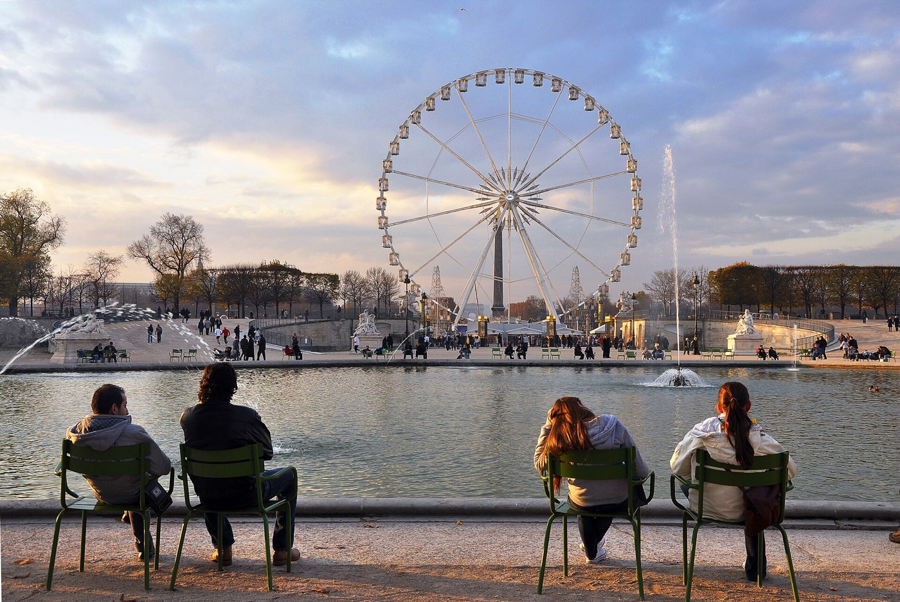
Angelina, then the Tuileries
Angelina, 226 Rue de Rivoli — chocolat chaud l'Africain and a croissant. Then the Grand Bassin Octogonal; the Orangerie is twenty steps off if you want the Water Lilies.
Breakfast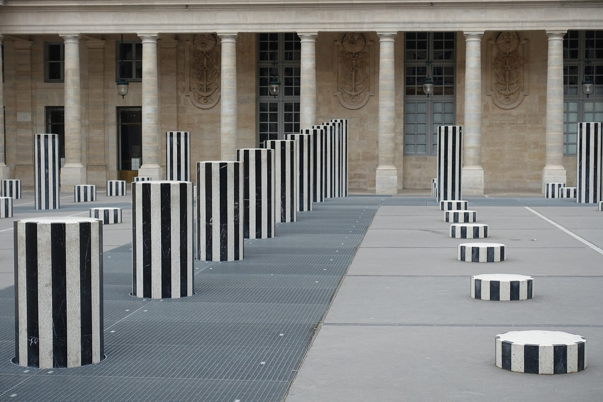
Vendôme to Palais-Royal
Place Vendôme, then Rue Saint-Honoré, then the Palais-Royal arcades — Didier Ludot, Buren's striped columns, a garden most tour groups skip.
ShoppingLunch options
- Verjus Bar à Vins — small plates, natural wine, 52 Rue de Richelieu.
- Kunitoraya — udon, quick, Rue Villedo.
- Juveniles — wine bar, simple bistro plates, Rue de Richelieu.
All a few minutes off Palais-Royal.
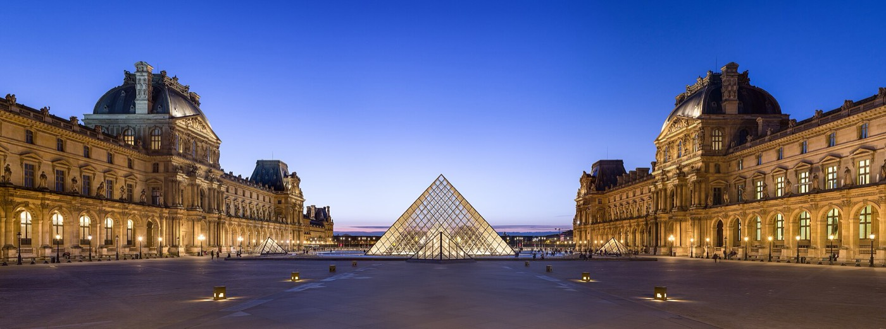
The Pyramid, then the river
Cour Napoléon, then cross the Pont des Arts to the Left Bank — a lock-bridge until the city cleared them off in 2015, now a place to watch barges go under.
Louvre, interior. Open to 9:45 PM on Fridays only — the one evening it's not closed at six. A few hours inside, still an easy walk to Lou Lou by seven. Trades the Saint-Germain and Luxembourg stops below.
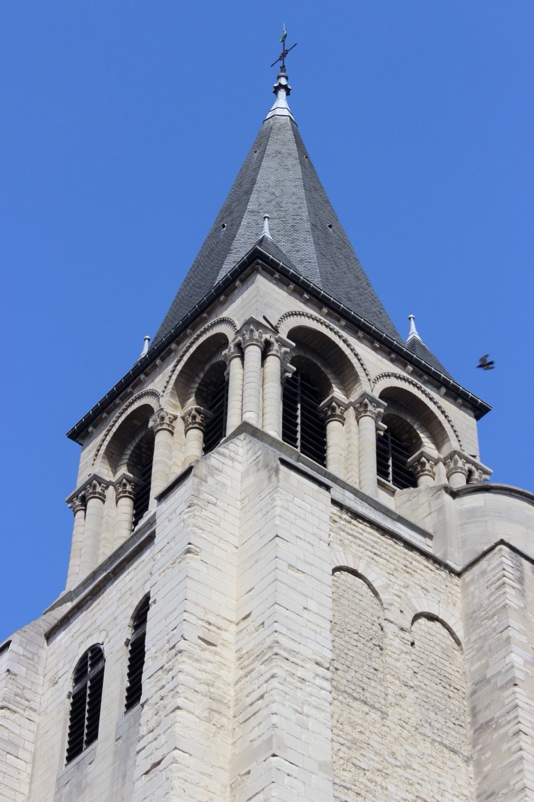
Saint-Germain-des-Prés
Oldest church in Paris, then bookshops and gallery windows on Rue de Furstemberg and Rue Bonaparte. Flore and Les Deux Magots are both on the square for coffee.
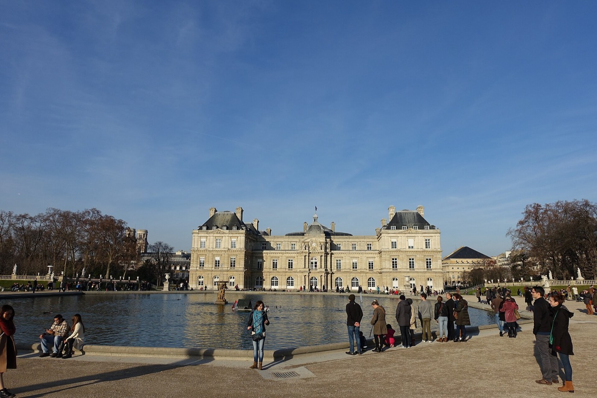
Jardin du Luxembourg
Rented chairs around the pond, the Médicis Fountain, kids with sailboats. No fixed plan here.
Back to the boat
Via the Musée d'Orsay's clockface and the Pont Royal — about fifteen minutes, river the whole way.
Dinner: Lou Lou
107 Rue de Rivoli, inside the Musée des Arts Décoratifs courtyard — five minutes from the gangplank.
ReservedNightcap options
- Le Fumoir — cocktail bar by the Louvre colonnade.
- Harry's New York Bar — historic, Rue Daunou, short walk.
- Stay in — wine on deck.
Saturday
7th arrondissement in the morning, Marais and the islands midday, Montmartre at night. One metro crossing; the rest on foot.
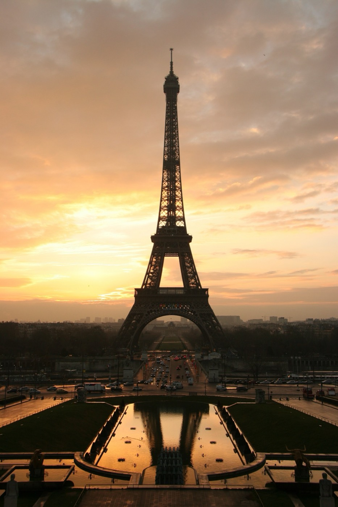
Eiffel Tower, Trocadéro side
Smallest crowd of the day at this hour. Trocadéro terraces for photos, then down through the gardens to the base.
View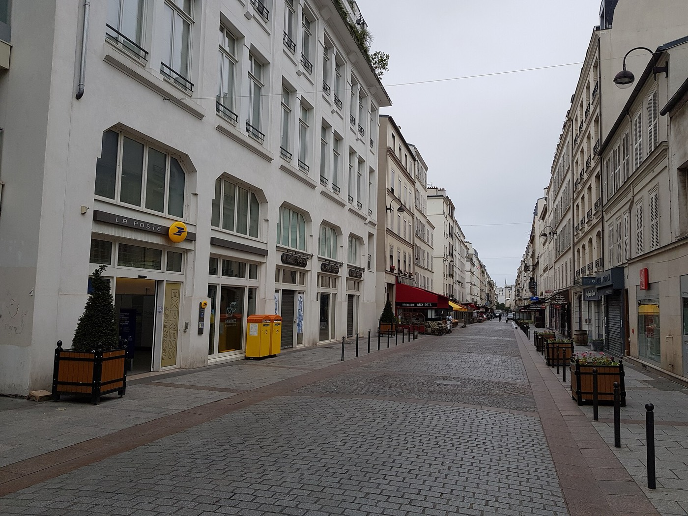
Rue Cler
Market street in the 7th — cheesemongers, produce stands, coffee. Pedestrian-only.
Market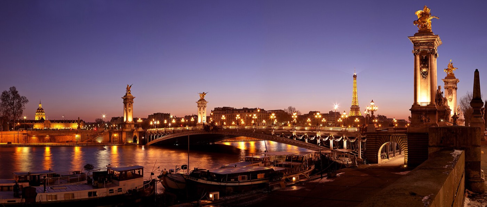
Pont Alexandre III
Gilt nymphs, Art Nouveau lamps, Les Invalides' gold dome straight ahead. Built for the 1900 World's Fair.
ViewLine 1, or a cab, to the Marais
The one real crosstown jump of the day — about 20 minutes either way.
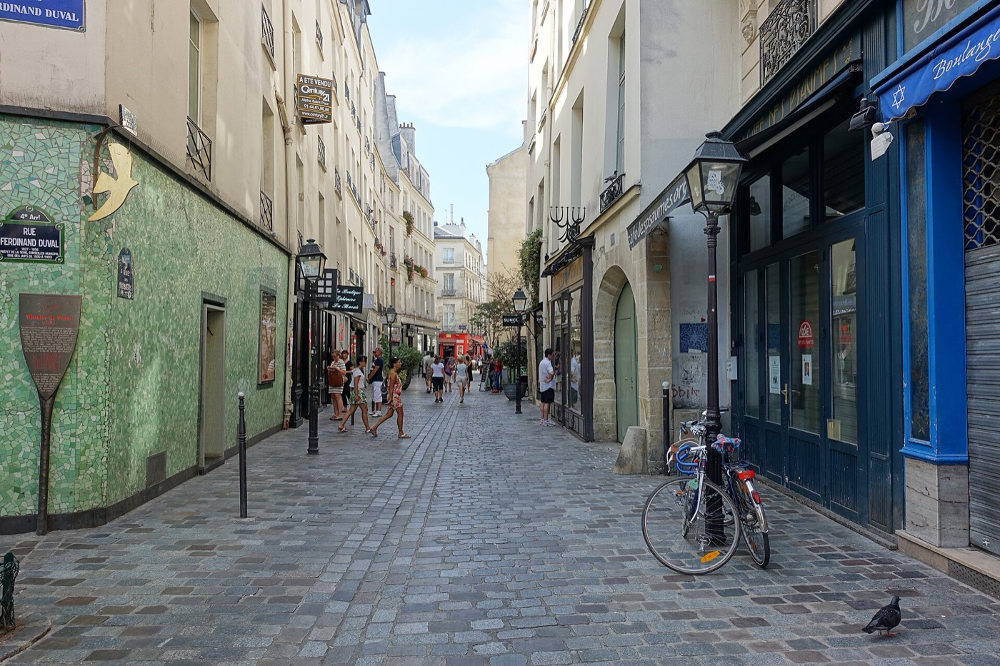
Lunch: L'As du Falafel
Rue des Rosiers, cash only, line moves fast, vegetarian by default. Sacha Finkelsztajn a few doors down if the line's too long.
Lunch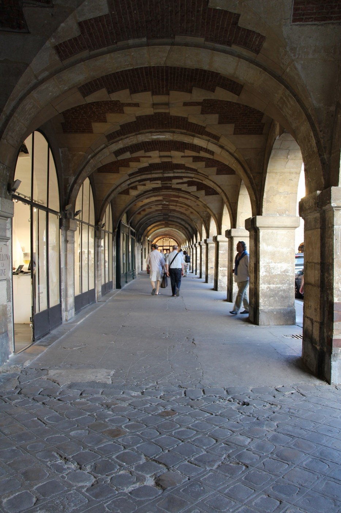
Place des Vosges + the Marais
Oldest planned square in Paris, arcaded on all four sides. Boutiques on the way out; Village Saint-Paul for antiques if there's time.
Shopping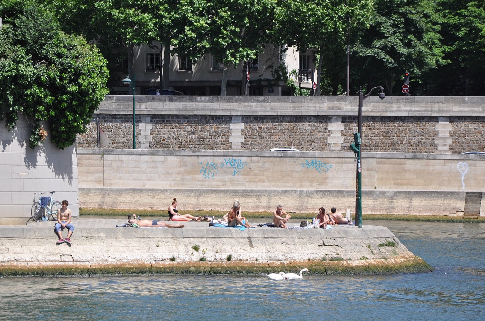
Île Saint-Louis: Berthillon
Ice cream most of the city gets compared to. Counter service — eat it on the quai.
Treat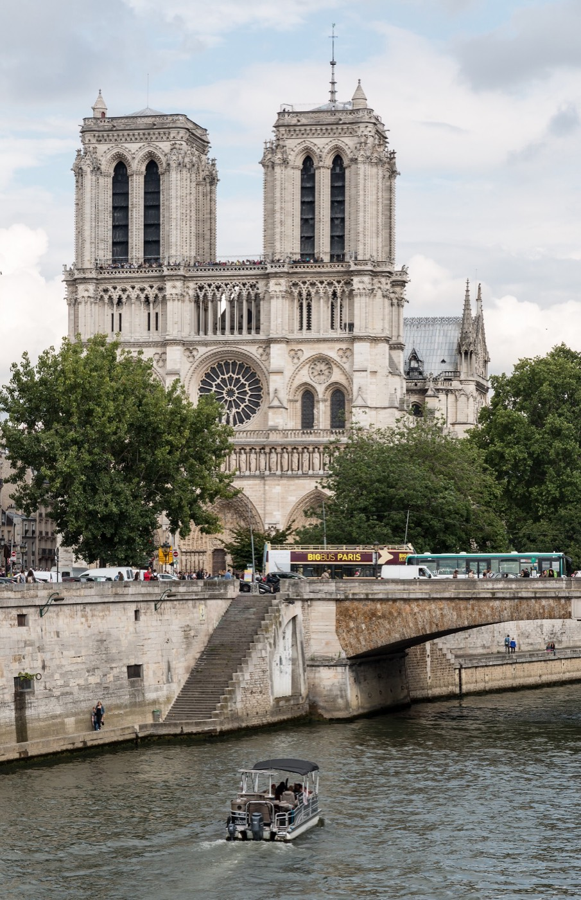
Notre-Dame + Île de la Cité
Reopened December 2024, facade newly cleaned. Entry needs a timed slot booked ahead — this is an outside-only stop.
View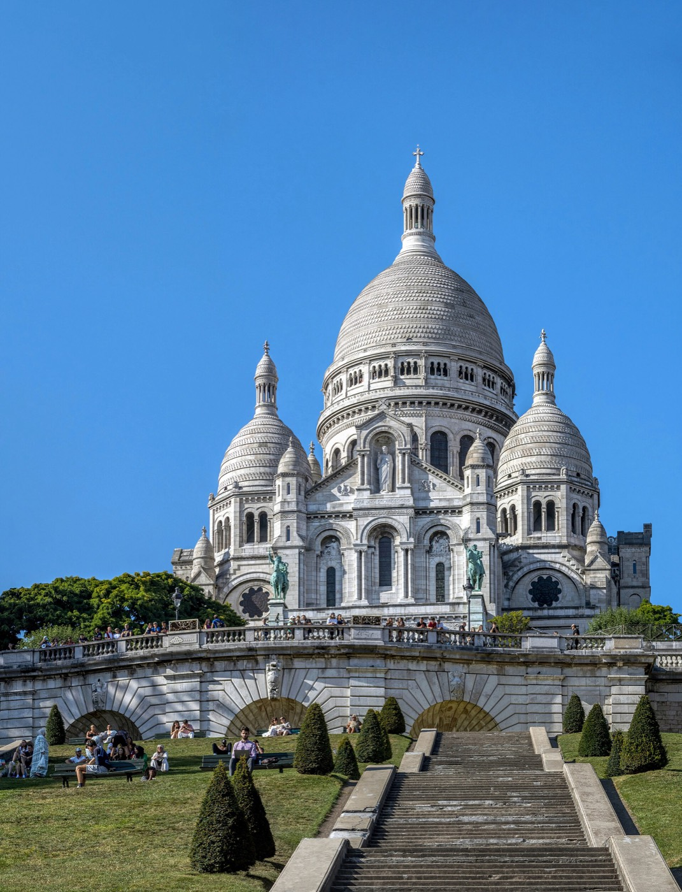
Up to Montmartre
Metro or cab to Abbesses, then climb — stairs near the funicular, quieter than the main staircase. Place du Tertre for the caricature artists, Rue des Abbesses for the rest.
Wander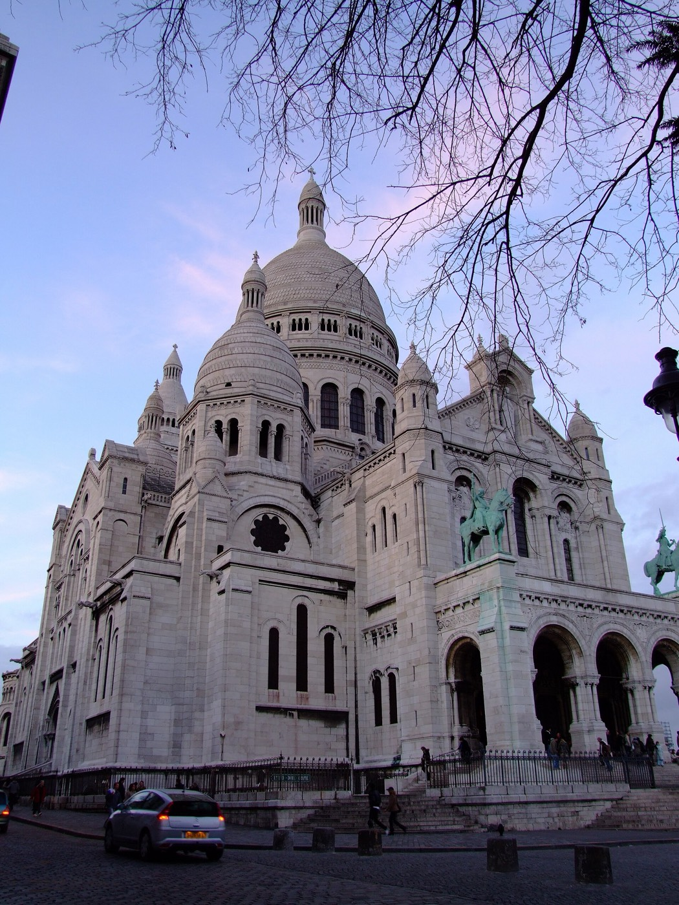
Sunset from Sacré-Cœur
Steps face west, full view over the city. Gets crowded close to sunset.
ViewDinner options
- Candelaria — mezcal bar behind an unmarked taqueria door, Marais.
- Le Mary Celeste — natural wine, oysters and ceviche, corner spot, Marais.
- Clown Bar — natural wine bar in a former circus building, near République.
Reservations recommended for any of these on a Saturday.
Walk the river back
Quai-side the whole way if your feet hold out, a cab if they don't.
Sunday
Half a day. Out of the city no later than 2:00 PM for a 5:00 PM flight out of CDG.
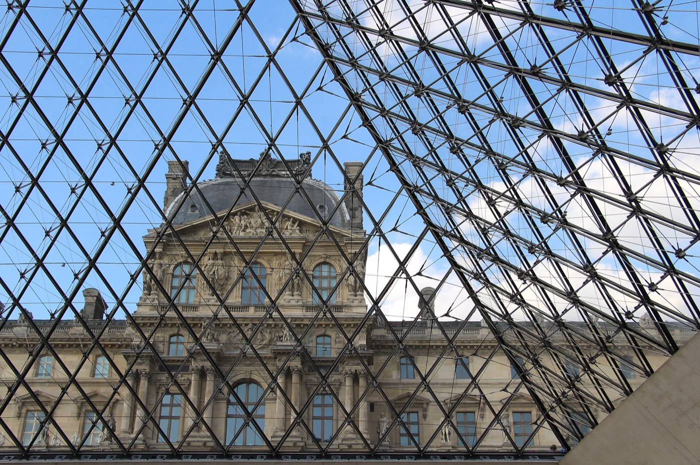
Breakfast options
- Café Marly — terrace overlooking the Pyramid, Louvre side.
- Boulangerie run — pastries to go, no sit-down needed.
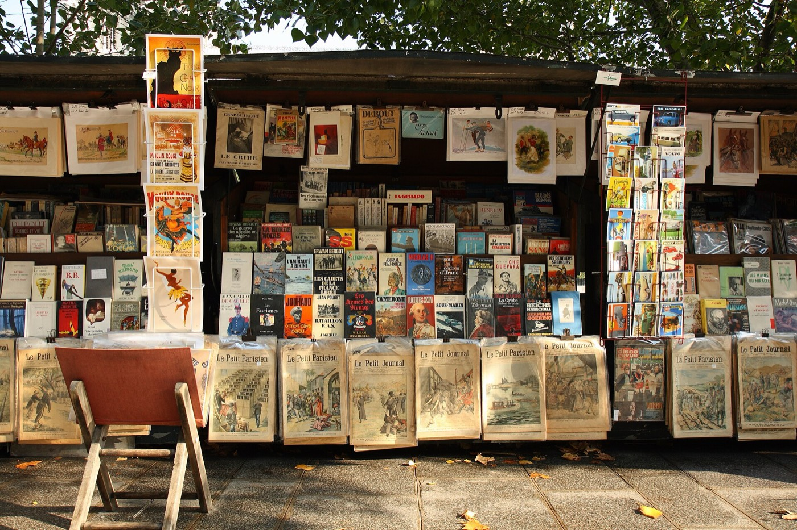
Bouquinistes on the Quai Voltaire
Cross the Pont Royal, browse the green boxes — licensed as bookstalls since the 1850s. Prints and secondhand books, easy to pack flat.
WanderLast lunch, somewhere easy
Stay on this side of the river — Rue du Bac or Saint-Germain. No reservation needed.
Pack up, check out
Back to the péniche. Bags down the gangplank by 1:15.
Leave the city
Car to CDG. Hard stop: wheels rolling no later than 2:00 PM — buffer, not deadline.
NLT 14h00Arrive CDG
45–60 minutes depending on the Périphérique. About two and a half hours before the flight — time for security, not for duty-free.
Wheels up
Out of CDG.